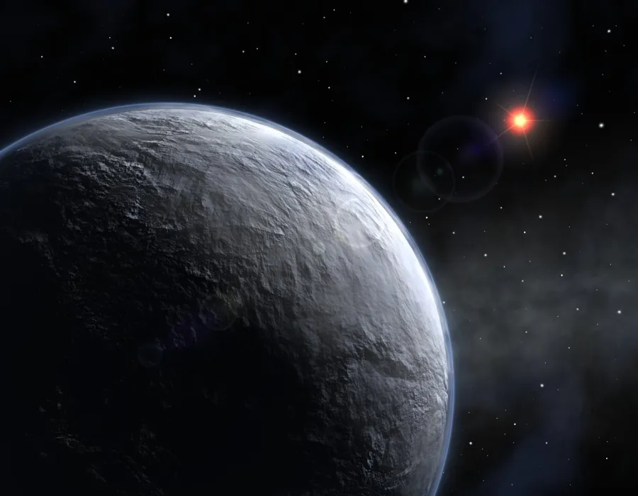

25. Januar 2006
OGLE-2005-BLG-390Lb: kühle Supererde per Mikrolinseneffekt
Ein weltweites Teleskopnetz, darunter das dänische 1,54-Meter-Teleskop auf La Silla, entdeckte den Planeten über den Mikrolinseneffekt: Die Schwerkraft eines Vordergrundsterns verstärkt kurzzeitig das Licht eines fernen Sterns, ein Planet verrät sich durch eine kleine zusätzliche Abweichung.
Der Planet hat etwa fünf Erdmassen – ein um den Faktor zwei unsicherer Wert – und war damals der masseärmste bekannte Planet bei einem gewöhnlichen Stern. Er umkreist einen roten Zwergstern in etwa zehn Jahren, rund 20.000 Lichtjahre entfernt nahe dem Zentrum der Milchstraße. Seine Oberflächentemperatur wird auf minus 220 Grad Celsius geschätzt.
Quelle: ESO: "It's Far, It's Small, It's Cool: It's an Icy Exoplanet!", 25.01.2006